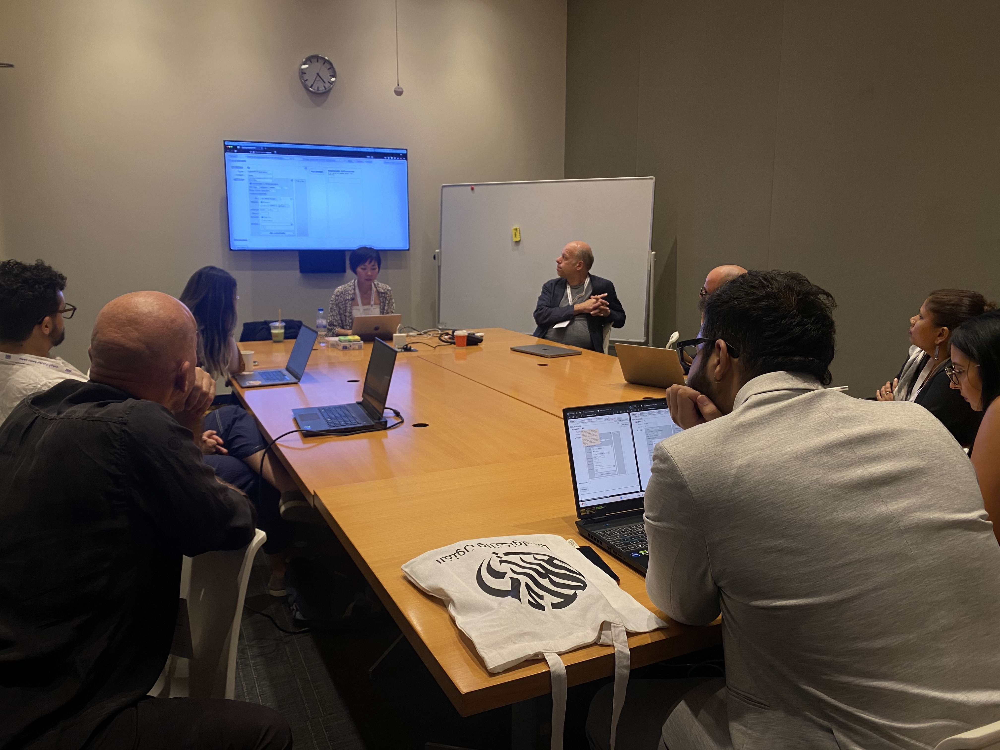

Describing, Visualising and Generating Interactions in Interactive Art (PhD research)
A Relational Model of Interaction
Publication:
Dan Xu, Maarten H. Lamers, and Edwin van der Heide (2023). "Towards a Relational Model of Co-located Interaction in Interactive Art". In: Proceedings of the 28th International Symposium on Electronic Art. Paris, France
From the Relational Model to the Relational Modelling Tool
Publication:
Dan Xu, Maarten H. Lamers, and Edwin van der Heide (in print). "A Novel Web-Based Tool for Modelling, Visualising, and Generating Interactions in Interactive Art". In: >International Conference on ArtsIT, Interactivity and Game Creation. Abu Dhabi, UAE. Best paper award
Describing and Comparing Co-located Interaction
Publication:
Dan Xu, Maarten H. Lamers, and Edwin van der Heide (2023). "Describing and Comparing Co-located Interaction in Interactive Art Using a Relational Model". In: International Conference on ArtsIT, Interactivity and Game Creation. Springer. Campinas, Brazil, pp. 198–217.
Describing and Comparing More-than-Human Interaction
Workshop on Modelling and Creating Interactions

Publication submitted to xCoAx 2025 and is under review.
© Dan Xu 2025. All rights reserved.


 by Rafael Lozano-Hemmer.jpg)
 by Jiabao Li.jpg)